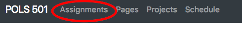
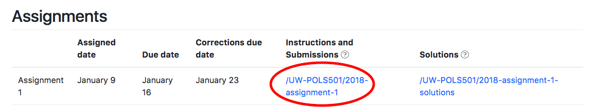
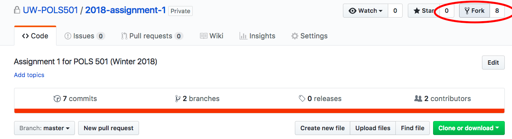
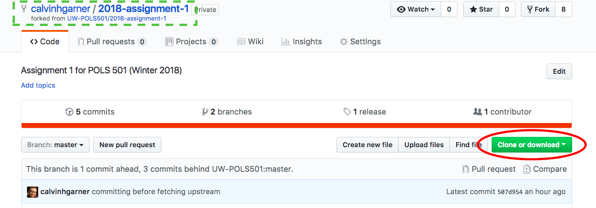
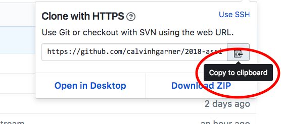
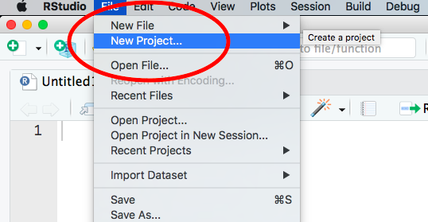
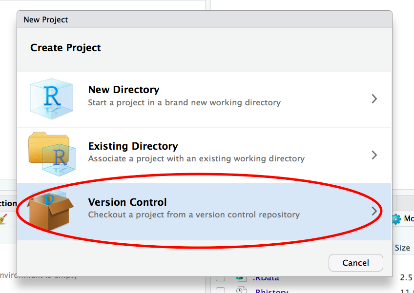
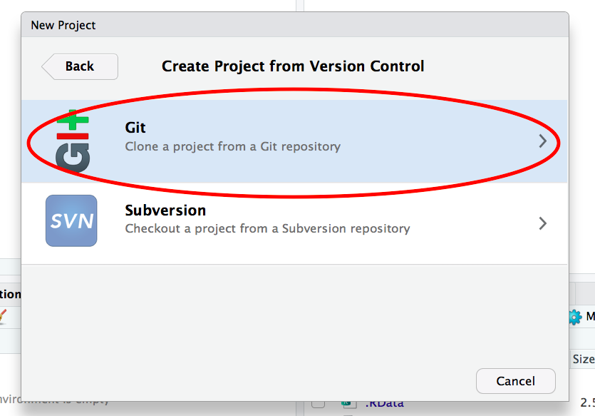
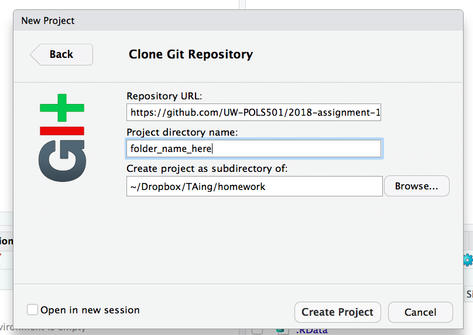

Git: Assignment Submission and Workflow
Cloning, Pull Requests, Forking, Pulling, and Pushing
See the Happy Git and GitHub for the useR chapter Fork a repo.
Instructions
Go to the course website, click Assignments.
Scroll down to the Assignments section, click on the link to the assignment under Instructions and Submissions.
Click on the Fork button to fork the repository to your GitHub account.
Click Clone or download. You will work on the copy of the repository that exists on your account.
Click Copy to clipboard
Go to RStudio, click File and select New Project.
Select Version Control.
Choose Git.
Paste the URL that you copied into the field Repository URL, choose a name for the folder in which the project will be saved in the field Project Directory Name, and select the sub-directory

Overview

The above diagram provides an overview of the relationship between these repositories and the workflow.
- Forks the repository
UW-POLS501/assignment-1tousername/assignment-1to get a copy of the assignment in their GitHub account. - Clone the repository to their device.
- Work on the assignment and commit changes to the repository on their device.
- Push changes to their repository,
UW-POLS501/assignment-1 - When ready to submit their assignment, open a Pull request
Alternatively, the workflow is represented as: